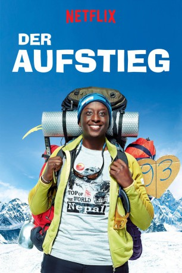

#7942 Der Aufstieg
 gesehen am 27.01.2018
gesehen am 27.01.2018
 
 IMDB-Wertung: 6.9 / 10
IMDB-Wertung: 6.9 / 10  Metascore: 0
Metascore: 0 
Was hat sich Samy Diakhate (Ahmed Sylla) da nur eingebrockt, als er vor seiner Freundin Nadia (Alice Belaïdi) rumtönte, dass er für sie alles machen würde, sogar den Mount Everest besteigen. Nadia zeigt sich nämlich wenig beeindruckt und so muss Samy seinen Worten wohl Taten folgen lassen. Tatsächlich macht sich der Franzose anschließend auf, um den 8.848 Meter hohen Berg zu bezwingen und bewegt damit nicht nur seine Freundin, sondern auch ganz Frankreich.
Jahr: 2017
Dauer: 105 Minuten
FSK:
Land: Frankreich Studio: Mars DistributionTonspuren: DD5.1 - , DD5.1 - ,
Untertitel: Deutsch, Englisch, Französisch, , , , ,
Auflösung: 1080p (1920x1080) Größe: 4157 MB
Genre: Komödie, Abenteuer, Liebe
Regisseur: Ludovic Bernard
Drehbuch: Ludovic Bernard
Soundtrack: Lucien Papalu, Laurent Sauvagnac
Darsteller:
 Moussa Maaskri als Nassir
Moussa Maaskri als Nassir- Johannes Oliver Hamm als Johan
 Jochen Hägele als Emmerich
Jochen Hägele als Emmerich- Sokhna Diallo als Soeur da Samy
- Romane Portail als Florence Monget
- Jean Dell als Homme d'affaire taxi
- Ciarán Charles als Rooney
- Ahmed Sylla als Samy Diakhaté
- Alice Belaïdi als Nadia
- Kévin Razy als Ben
 Nicolas Wanczycki als Jeff
Nicolas Wanczycki als Jeff- Waly Dia als Max
- Maïmouna Gueye als Evelyne Diakhaté
- Denis Mpunga als Célestin Diakhaté
- Fadila Belkebla als Houria
- Umesh Tamang als Johnny le sherpa
- Amir El Kacem als Kévin
- Rabah Nait Oufella als Saïd
- Oscar Copp als Nadir
- Erico Salamone als Didier Fauconnier
- Mariama Gueye als Angelique
- Tiphaine Daviot als Sophie
- Robin Rafoni als Marley
- Gabrielle Atger als Charlotte
- Shriprem Gurung als Dorge, le sherpa
- Brandon Omekenge als Omar
- Aksel Louhab als Petit frère Samy 1
- Bayron Sougoulé als Petit frère Samy 2
- Pasang Lama als Peter
- Pranawa Koirala als Médecin camp de base
- Mario Pecqueur als Menaz
- Alice Gingembre als Hotesse
- Anissa Allali als Samira
- Rodolphe Borgniet als Client taxi
- Aymeric Lecerf als Collègue Florence Monget
- Sylvie Batty als Professeur Samy
- Azedine Kasri als Youssef
- Audran Cattin als Patron Nassir
- Rhys Dunlop als Gerrard
- Pasang als Sherpa
- Emmanuel Tokpa als Samy 11 ans
- Jasmine Azzouz als Nadia 11 ans
- Pierre Cachia als Jeune Parisien
- Julian Bugier als Journaliste TV
Datei: X:\2017(A-F)\Aufstieg, Der (2017, FSK, 1920x1080).mkv seit 07.01.2018
Festplatte: HD 2017(A-Z)-2018(A-F)
 Es gibt insgesamt 152 Filme in der Gruppe '2017(A-F)'
Es gibt insgesamt 152 Filme in der Gruppe '2017(A-F)'